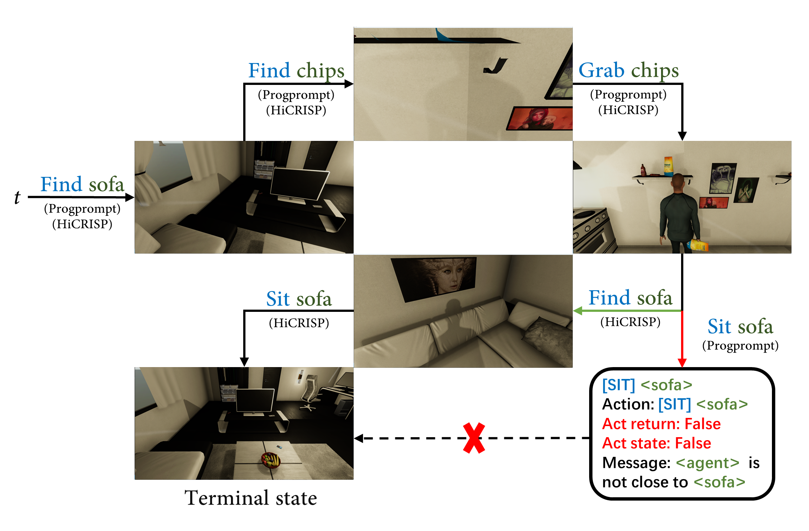
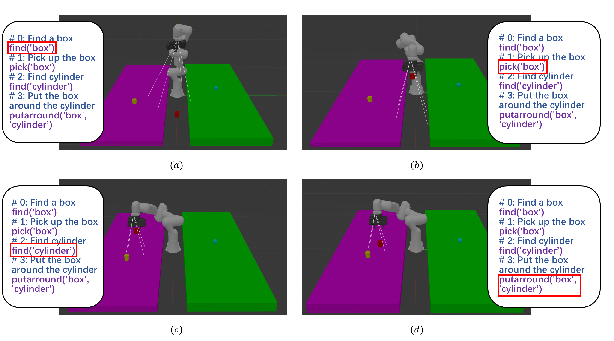

Experiments

HiCRISP demonstrates superior performance in a VH simulator when compared to ProgPrompt.

HiCRISP acts in Gazebo Engine.

The integration of Large Language Models (LLMs) into robotics has revolutionized human-robot interactions and autonomous task planning. However, these systems are often unable to self-correct during the task execution, which hinders their adaptability in dynamic real-world environments. To address this issue, we present a Hierarchical Closed-loop Robotic Intelligent Self-correction Planner (HiCRISP), an innovative framework that enables robots to correct errors within individual steps during the task execution. HiCRISP actively monitors and adapts the task execution process, addressing both high-level planning and low-level action errors. Extensive benchmark experiments, encompassing virtual and real-world scenarios, showcase HiCRISP's exceptional performance, positioning it as a promising solution for robotic task planning with LLMs.
BibTex Code Here